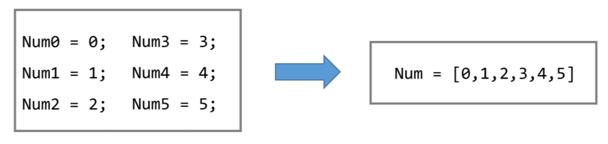
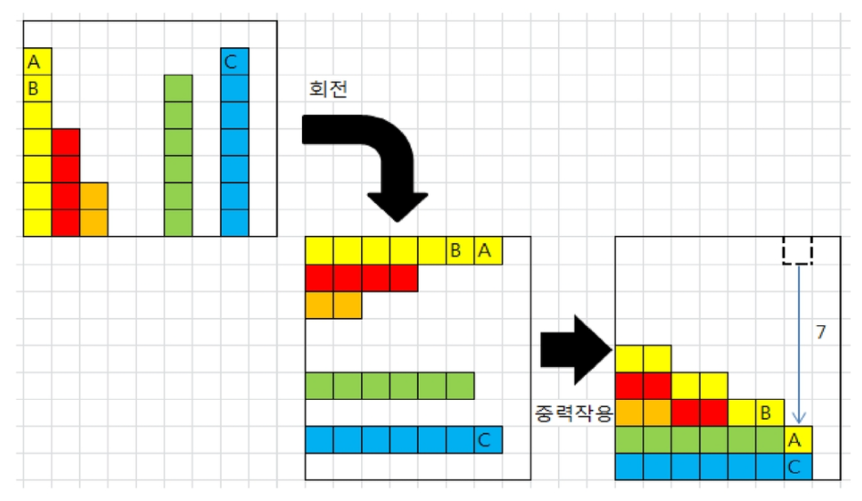
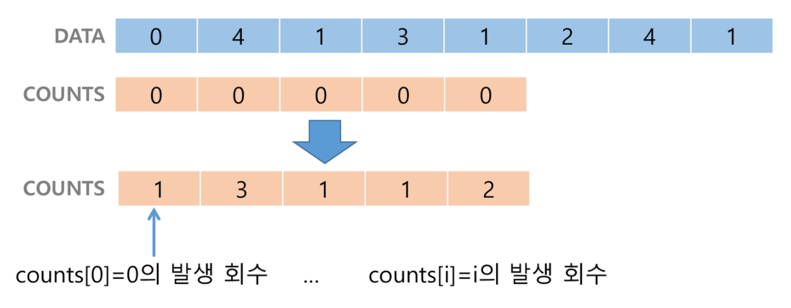
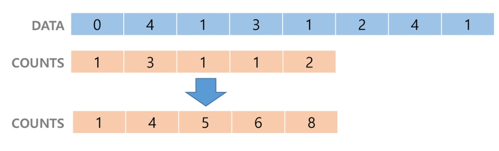
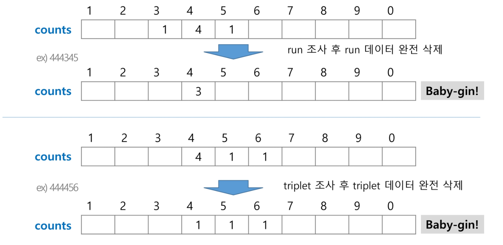
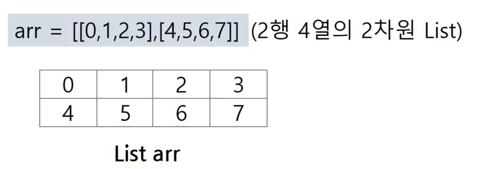
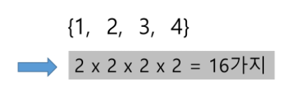
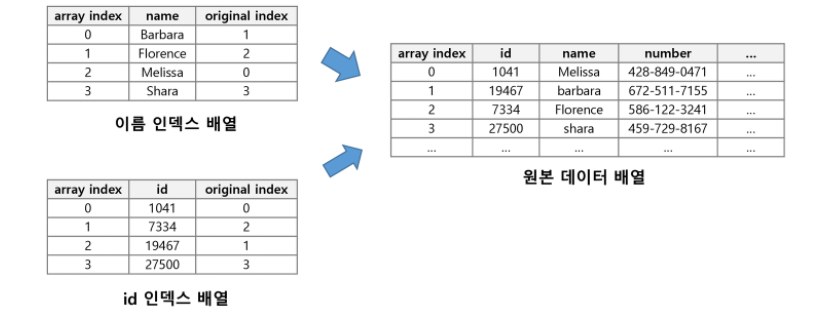

01. 배열과 알고리즘 기본¶
1.1 1차원 배열¶
1차원 배열
배열
버블 정렬 (Bubble Sort)
카운팅 정렬 (Counting Sort)
완전 검색
그리디 (Greedy Algorithm)
배열(Array)이란 무엇인가¶
일정한 자료형의 변수들을 하나의 이름으로 열거하여 사용하는 자료 구조
아래의 예는 6개의 변수를 사용해야 하는 경우, 이를 배열로 바꾸어 사용하는 것이다.

배열의 필요성¶
프로그램 내에서 여러 개의 변수가 필요할 때, 일일이 다른 변수명을 이용하여 자료에 접근하는 것은 매우 비효율적일 수 있다.
배열을 사용하면 하나의 선언을 통해서 둘 이상의 변수를 선언할 수 있다.
단순히 다수의 변수 선언을 의미하는 것이 아니라, 다수의 변수로는 하기 힘든 작업을 배열을 활용해 쉽게 할 수 있다.
1차원 배열의 선언¶
별도의 선언 방법이 없으면 변수에 처음 값을 할당할 때 생성
이름 : 프로그램에서 사용할 배열의 이름
Arr = list(); Arr = [];
1차원 배열의 접근¶
Arr[0] = 10;: 배열 Arr의 0번쨰 원소에 10을 저장하라Arr[idx] = 20;: 배열 Arr의 idx번쨰 원소에 20을 저장하라
연습문제 1.1 Gravity¶
상자들이 쌓여있는 방이 있다. 방이 오른쪽으로 90도 회전하여 상자들이 중력의 영향을 받아 낙하한다고 할 때, 낙차가 가장 큰 상자를 구하여 그 낙차를 리턴하는 프로그램을 작성하시오.
중력은 회전이 완료된 후 적용된다.
상자들은 모두 한쪽 벽면에 붙어진 상태로 쌓여 2차원의 형태를 이루며 벽에서 떨어져서 쌓인 상자는 없다.
방의 가로 길이는 항상 100이며, 세로 길이도 항상 100이다.
즉, 상자는 최소 0, 최대 100 높이로 쌓을 수 있다.
아래 예) 총 26개의 상자가 회전 후, 오른쪽 방 그림의 상태가 된다. A 상자의 낙차가 7로 가장 크므로 7을 리턴하면 된다.
회전 결과, B 상자의 낙차는 6, C 상자의 낙차는 1이다.

1.2 정렬 기본¶
정렬¶
2개 이상의 자료를 특정 기준에 의해 작은 값부터 큰 값 (오름차순 : ascending), 혹은 그 반대의 순서대로 (내림차순 : descending) 재배열하는 것
키 : 자료를 정렬하는 기준이 되는 특정 값
정렬의 종류¶
버블 정렬 (Bubble Sort)
카운팅 정렬 (Counting Sort)
선택 정렬 (Selection Sort)
퀵 정렬 (Quick Sort)
삽입 정렬 (Insertion Sort)
병합 정렬 (Merge Sort)
버블 정렬 (Bubble Sort)¶
인접한 두 개의 원소를 비교하며 자리를 계속 교환하는 방식
정렬 과정
첫 번째 원소부터 인접한 원소끼리 계속 자리를 교환하면서 맨 마지막 자리까지 이동한다.
한 단계가 끝나면 가장 큰 원소가 마지막 자리로 정렬된다.
교환하며 자리를 이동하는 모습이 물 위에 올라오는 거품 모양과 같다고 하여 버블 정렬이라고 한다.
시간 복잡도 : \(O(n^2)\)
배열을 사용한 버블 정렬
def BubbleSort(a): for i in range(len(a)-1, 0, -1): for j in range(0, i): if a[j] > a[j+1]: a[j], a[j+1] = a[j+1], a[j]
카운팅 정렬 (Counting Sort)¶
항목들의 순서를 결정하기 위해 집합에 각 항목이 몇 개씩 있는지 세는 작업을 하여, 선형 시간에 정렬하는 효율적인 알고리즘
제한 사항
정수나 정수로 표현할 수 있는 자료에 대해서만 적용 가능 : 각 항목의 발생 회수를 기록하기 위해, 정수 항목으로 인덱스 되는 카운트들의 배열을 사용하기 때문이다.
카운트들을 위한 충분한 공간을 할당하려면 집합 내의 가장 큰 정수를 알아야 한다.
시간 복잡도
\(O(n+k)\) : n은 리스트 길이, k는 정수의 최대값
카운팅 정렬 과정¶
1단계 : Data에서 각 항목들의 발생 회수를 세고, 정수 항목들로 직접 인덱스 되는 카운트 배열 counts에 저장한다.

2단계 : 정렬된 집합에서 각 항목의 앞에 위치할 항목의 개수를 반영하기 위해 counts의 원소를 조정한다.

3단계 : counts[i]를 감소시키면서 배열에 값을 삽입한다.
def Counting_Sort(A, B, k):
# A [] -- 입력 배열 (1 to k)
# B [] -- 정렬된 배열
# C [] -- 카운트 배열
C = [0] * (k + 1)
for i in range(0, len(B)):
C[A[i]] += 1
for i in range(1, len(C)):
C[i] += C[i-1]
for i in range(len(B)-1, -1, -1):
B[C[A[i]]-1] = A[i]
C[A[i]] -= 1
정렬 알고리즘 비교¶
알고리즘 |
평균 수행시간 |
최악 수행시간 |
알고리즘 기법 |
비고 |
|---|---|---|---|---|
버블 정렬 |
\(O(n^2)\) |
\(O(n^2)\) |
비교와 교환 |
코딩이 가장 손쉽다. |
카운팅 정렬 |
\(O(n+k)\) |
\(O(n+k)\) |
비교환 방식 |
n이 비교적 작을 때만 가능하다. |
1.3 완전 검색 (Exaustive Search)¶
완전 검색 방법은 문제의 해법으로 생각할 수 있는 모든 경우의 수를 나열해보고 확인하는 기법이다.
Brute-force 혹은 generate-and-test 기법이라고도 불리운다.
모든 경우의 수를 테스트한 후, 최종 해법을 도출한다.
일반적으로 경우의 수가 상대적으로 작을 때 유용하다.
모든 경우의 수를 생성하고 테스트하기 때문에 수행 속도는 느리지만, 해답을 찾아내지 못할 확률이 작다.
자격검정평가 등에서 주어진 문제를 풀 때, 우선 완전 검색으로 접근하여 해답을 도출한 후, 성능 개선을 위해 다른 알고리즘을 사용하고 해답을 확인하는 것이 바람직하다.
연습문제 1.2 Baby-gin Game¶
설명
0 ~ 9 사이의 숫자 카드에서 임의의 카드 6장을 뽑았을 때, 3장의 카드가 연속적인 번호를 갖는 경우를 run 이라 하고, 3장의 카드가 동일한 번호를 갖는 경우를 triplet이라고 한다.
그리고, 6장의 카드가 run과 triplet로만 구성된 경우를 baby-gin으로 부른다.
6자리 숫자를 입력받아 baby-gin 여부를 판단하는 프로그램을 작성하라.
입력 예
667767은 두 개의 triplet이므로 baby-gin이다. (666, 777)
054060은 한 개의 run과 한 개의 triplet이므로 역시 baby-gin이다. (456, 000)
101123은 한 개의 triplet가 존재하나, 023이 run이 아니므로 baby-gin이 아니다.
(123을 run으로 사용하더라도 011이 run이나 triplet가 아님)
6자리의 숫자를 입력 받아 어떻게 Baby-gin 여부를 찾을 것인가?
완전 검색을 이용한 Baby-gin 접근¶
고려할 수 있는 모든 경우의 수 생성하기
6개의 숫자로 만들 수 있는 모든 숫자 나열 (중복 포함)
예) 입력으로 [2, 3, 5, 7, 7, 7]을 받았을 경우, 아래와 같이 순열을 생성할 수 있다.
2 3 5 7 7 7 2 3 7 5 7 7 2 3 7 7 5 7 ... 7 7 7 5 3 2
해답 테스트하기
앞의 3자리와 뒤의 3자리를 잘라, run과 triplet 여부를 테스트하고 최종적으로 baby-gin을 판단한다.
순열을 어떻게 생성할 것인가¶
순열 (Permutation)¶
서로 다른 것들 중 몇 개를 뽑아서 한 줄로 나열하는 것
서로 다른 n개 중 r개를 택하는 순열은 \(_{n}P_{r}\)과 같이 표현한다.
그리고 \(_{n}P_{r}\)은 다음과 같은 식이 성립한다. $\( _nP_r = n \times (n-1) \times \cdots\times (n-r+1) \)$
\(_nP_n = n!\) 라고 표기하며
Factorial이라 부른다. $\( n! = n \times (n-1) \times (n-2) \times \cdots \times 2 \times 1 \)$예)
{1, 2, 3}을 포함하는 모든 순열을 생성하는 함수동일한 숫자가 포함되지 않았을 때, 각 자리 수 별로 loop을 이용해 아래와 같이 구현할 수 있다.
for i in range(1, 4): for j in range(1, 4): if j != i: for k in range(1, 4): if k != i and k != j: print(i, j, k)
1.4 탐욕 (Greedy) 알고리즘¶
탐욕 알고리즘은 최적해를 구하는 데 사용되는 근시안적인 방법
여러 경우 중 하나를 결정해야 할 때마다 그 순간에 최적이라고 생각되는 것을 선택해 나가는 방식으로 진행하여 최종적인 해답에 도달한다.
각 선택의 시점에서 이루어지는 결정은 지역적으로는 최적이지만, 그 선택들을 계속 수집하여 최종적인 해답을 만들었다고 하여, 그것이 최적이라는 보장은 없다.
일반적으로, 머릿속에 떠오르는 생각을 검증 없이 바로 구현하면 Greedy 접근이 된다.
탐욕 알고리즘의 동작 과정¶
해 선택 : 현재 상태에서 부분 문제의 최적 해를 구한 뒤, 이를 부분해 집합 (Solution Set)에 추가한다.
실행 가능성 검사 : 새로운 부분해 집합이 실행 가능한지를 확인한다. 곧, 문제의 제약 조건을 위반하지 않는지를 검사한다.
해 검사 : 새로운 부분해 집합이 문제의 해가 되는지를 확인한다. 아직 전체 문제의 해가 완성되지 않았다면 1)의 해 선택부터 다시 시작한다.
탐욕 알고리즘의 예 : 거스름돈 줄이기¶
어떻게 하면 손님에게 거스름돈으로 주는 지폐와 동전의 개수를 최소한으로 줄일 수 있을까?
해 선택 : 여기에서 멀리 내다볼 것 없이 가장 좋은 해를 선택한다. 단위가 큰 동전으로만 거스름돈을 만들면 동전의 개수가 줄어들므로 현재 고를 수 있는 가장 단위가 큰 동전을 하나 골라 거스름돈에 추가한다.
실행 가능성 검사 : 거스름돈이 손님에게 내드려야 할 액수를 초과하는지 확인한다. 초과한다면 마지막에 추가한 동전을 거스름돈에서 빼고, 1)로 돌아가서 현재보다 한 단계 작은 단위의 동전을 추가한다.
해 검사 : 거스름돈 문제의 해는 당연히 거스름돈이 손님에게 내드려야 하는 액수와 일치하는 셈이다. 더 드려도, 덜 드려도 안되기 때문에 거스름돈을 확인해서 액수에 모자라면 다시 1)로 돌아가서 거스름돈에 추가할 동전을 고른다.
탐욕 알고리즘 풀이¶
Baby-gin을 완전검색 아닌 방법으로 풀어보자.

num = 456789 # Baby Gin 확인할 6자리 수
c = [0] * 12 # 6자리 수로부터 각 자리 수를 추출하여 개수를 누적할 리스트
for i in range(6):
c[num % 10] += 1
num //= 10
i = 0
tri, run = 0, 0
while i < 10:
if c[i] >= 3:
c[i] -= 3
tri += 1
continue
if c[i] >= 1 and c[i+1] >= 1 and c[i+2] >= 1: # run 조사 후 데이터 삭제
c[i] -= 1
c[i+1] -= 1
c[i+2] -= 1
run += 1
continue
i += 1
if run + tri == 2: print("Baby Gin")
else: print("Lose")
자주 실수하는 오답¶
입력받은 숫자를 정렬한 후, 앞뒤 3자리씩 끊어서 run 및 triplet을 확인하는 방법을 고려할 수도 있다.
예)
[6, 4, 4, 5, 4, 4]: 정렬하면 쉽게 baby-gin을 확인할 수 있다.예)
[1, 2, 3, 1, 2, 3]: 정렬하면[1, 1, 2, 2, 3, 3]로서, 오히려 baby-gin 확인을 실패할 수 있다.
위의 예처럼, 탐욕 알고리즘적인 접근은 해답을 찾아내지 못하는 경우도 있으니 유의해야 한다.
1.5 2차원 배열¶
배열 2
배열 : 2차 배열
부분집합 생성
바이너리 서치 (Binary Search)
셀렉션 알고리즘 (Selection Algorithm)
선택 정렬 (Selection Sort)
배열 (Array)
크기가 고정되어 있다.
반드시 연속되어 있어야 한다.
리스트 (Linked List)
불연속적으로 메모리 공간을 차지한다.

2차원 배열의 선언¶
1차원 List를 묶어놓은 List
2차원 이상의 다차원 List는 차원에 따라 Index를 선언
2차원 List의 선언 : 세로 길이 (행의 개수), 가로 길이 (열의 개수)를 필요로 함
Python에서는 데이터 초기화를 통해 변수 선언과 초기화가 가능함

N, M = map(int, inpue().split())
arr1 = [list(map(int, input().split())) for _ in range(N)]
# 2차원 배열 초기화
arr2 = [[0] * M for _ in range(N)]
# arr2 = [[0]*M]*N # 사용 불가 (얕은 복사)
pring(arr2)
2차원 배열의 접근¶
배열 순회 : n × m 배열의 n*m개의 모든 원소를 빠짐없이 조사하는 방법
행과 열은 x, y 보다는 i, j 혹은 r, c로 접근하자.
행 우선 순회¶
# i 행의 좌표
# j 열의 좌표
for i in range(len(Array)):
for j in range(len(Array[i])):
Array[i][j] # 필요한 연산 수행
열 우선 순회¶
# i 행의 좌표
# j 열의 좌표
for i in range(len(Array[0])):
for j in range(len(Array)):
Array[i][j]
지그재그 순회¶
# i 행의 좌표
# j 열의 좌표
for i in range(len(Array)):
for j in range(len(Array[0])):
Array[i][j + (m-1-2*j) * (i%2)]
# 필요한 연산 수행
# 짝수일 때는 j까지만, 홀수일 경우 뒤까지
for i in range(N):
if i % 2 == 0:
for j in range(M):
Arr[i][j]
else:
for j in range(M-1, -1, -1):
Arr[i][j]
델타를 이용한 2차 배열 탐색¶
2차 배열의 한 좌표에서 4방향의 인접 배열 요소를 탐색하는 방법
di = [0, 0, -1, 1] # 상하좌우
dj = [-1, 1, 0, 0]
for i in range(N) :
for j in range(M) :
for k in range(4) :
ni = i + di[i]
nj = j + dj[i]
# ni, nj가 2차 배열의 범위를 벗어나는 경우 제외
if 0 <= ni < N and 0 <= nj < M:
arr[ni][nj]
for i in range(N):
for j in range(M):
for dr, dc in [[0, 1], [1, 0], [0, -1], [-1, 0]]:
ni = i + dr
nj = j + dc
if 0 <= ni < N and 0 <= nj < M:
arr[ni][nj]
2차원 배열의 활용¶
전치 행렬¶
# i : 행의 좌표, len(arr)
# j : 열의 좌표, len(arr[0])
arr = [[1, 2, 3], [4, 5, 6], [7, 8, 9]] # 3*3 행렬
for i in range(3):
for j in range(3):
if i < j:
arr[i][j], arr[j][i] = arr[j][i], arr[i][j]
연습문제 1.3 이웃 절댓값¶
5×5 2차 배열에 무작위로 25개의 숫자로 초기화한 후 25개의 각 요소에 대해서 그 요소와 이웃한 요소와의 차의 절대값을 구하시오. 예를 들어 아래 그림에서 7 값의 이웃한 값은 2, 6, 8, 12 이며 차의 절대값의 합은 12이다.
25개의 요소에 대해서 모두 조사하여 총합을 구하시오.
벽에 있는 요소는 이웃한 요소가 없을 수 있음을 주의하시오.
예를 들어
[0][0]은 이웃한 요소가 2개이다.
1.6 부분집합 합(Subset Sum) 문제¶
유한 개의 정수로 이루어진 집합이 있을 때, 이 집합의 부분집합 중에서 그 집합의 원소를 모두 더한 값이 0이 되는 경우가 있는지를 알아내는 문제
예를 들어, [-7, -3, -2, 5, 8] 라는 집합이 있을 때, [-3, -2, 5] 는 이 집합의 부분집합이면서 (-3)+(-2)+5 = 0 이므로 이 경우의 답은 참이 된다.
부분집합 생성하기¶
완전검색 기법으로 부분집합 합 문제를 풀기 위해서는, 우선 집합의 모든 부분집합을 생성한 후에 각 부분집합의 합을 계산해야 한다.
주어진 집합의 부분집합을 생성하는 방법에 대해서 생각해보자.
부분집합의 수
집합의 원소가 n개일 때, 공집합을 포함한 부분집합의 수는 \(2^n\)개이다.
이는 각 원소를 부분집합에 포함시키거나 포함시키지 않는 2가지 경우를 모든 원소에 적용한 경우의 수와 같다.

각 원소가 부분집합에 포함되었는지 loop를 이용하여 확인하고 부분집합을 생성하는 방법
arr = [1, 2, 3, 4] bit = [0, 0, 0, 0] for i in range(2): bit[0] = i # 0번째 원소 for j in range(2): bit[1] = j # 1번째 원소 for k in range(2): bit[2] = k # 2번째 원소 for l in range(2) : bit[3] = l # 3번째 원소 print(bit, end = ' ') # 생성된 부분집합 출력 for p in range(4): if bit[p]: print(arr[p], end = ' ') print()
[0, 0, 0, 0] [0, 0, 0, 1] 4 [0, 0, 1, 0] 3 [0, 0, 1, 1] 3 4 [0, 1, 0, 0] 2 [0, 1, 0, 1] 2 4 [0, 1, 1, 0] 2 3 [0, 1, 1, 1] 2 3 4 [1, 0, 0, 0] 1 [1, 0, 0, 1] 1 4 [1, 0, 1, 0] 1 3 [1, 0, 1, 1] 1 3 4 [1, 1, 0, 0] 1 2 [1, 1, 0, 1] 1 2 4 [1, 1, 1, 0] 1 2 3 [1, 1, 1, 1] 1 2 3 4
비트 연산으로 생성하기¶
비트 연산자¶
&: 비트 단위로 AND 연산을 한다.|: 비트 단위로 OR 연산을 한다.<<: 피연산자의 비트 열을 왼쪽으로 이동시킨다.>>: 피연산자의 비트 열을 오른쪽으로 이동시킨다.∧: XOR (exclusive or)
<< 연산자¶
1 << n, shift 연산자
\(2^n\) 즉, 원소가 n개일 경우의 모든 부분집합의 수를 의미한다.
& 연산자¶
i & (1 << j)
i의 j번째 비트가 1인지 아닌지를 리턴한다.
보다 간결하게 부분집합을 생성하는 방법¶
arr = [3, 6, 7, 1, 5, 4]
n = len(arr) # n : 원소의 개수
for i in range(1<<n): # 1<<n : 부분 집합의 개수
for j in range(n): # 원소의 수 만큼 비트를 비교함
if i & (1<<j): # i의 j번째 비트가 1이면 j번째 원소 출력
print(arr[j], end=", ")
print()
print()
연습문제 1.4 부분집합¶
그럼 실제로 10개의 정수를 입력 받아 부분집합의 합이 0이 되는 것이 존재하는지를 계산하는 함수를 작성해보자.
1.7 검색 (Search)¶
저장되어 있는 자료 중에서 원하는 항목을 찾는 작업
목적하는 탐색 키를 가진 항목을 찾는 것
탐색 키 (search key) : 자료를 구별하여 인식할 수 있는 키
검색의 종류
순차 검색 (sequential search)
이진 검색 (binary search)
해쉬 (hash)
순차 검색 (Sequential Search)¶
일렬로 되어 있는 자료를 순서대로 검색하는 방법
가장 간단하고 직관적인 검색 방법
배열이나 연결 리스트 등 순차구조로 구현된 자료구조에서 원하는 항목을 찾을 때 유용함
알고리즘이 단순하여 구현이 쉽지만, 검색 대상의 수가 많은 경우에는 수행시간이 급격히 증가하여 비효율적임
2가지 경우
정렬되어 있지 않은 경우
정렬되어 있는 경우
정렬되어 있지 않은 경우¶
검색 과정
첫 번째 원소부터 순서대로 검색 대상과 키 값이 같은 원소가 있는지 비교하여 찾는다.
키 값이 동일한 원소를 찾으면 그 원소의 인덱스를 반환한다.
자료구조의 마지막에 이를 때까지 검색 대상을 찾지 못하면 검색 실패
찾고자 하는 원소의 순서에 따라 비교회수가 결정됨
첫 번째 원소를 찾을 때는 1번 비교, 두 번째 원소를 찾을 때는 2번 비교
정렬되지 않은 자료에서의 순차 검색의 평균 비교 회수
= (1/n)*(1+2+3+…+n) = (n+1)/2
시간 복잡도 : O(n)
구현 예
def sequentialSearch(a, n, key) i <- 0 while i<n and a[i]!=key: i <- i+1 if i<n : return i else : return -1
정렬되어 있는 경우¶
검색 과정
자료가 오름차순으로 정렬된 상태에서 검색을 실시한다고 가정하자.
자료를 순차적으로 검색하면서 키 값을 비교하여, 원소의 키 값이 검색 대상의 키 값보다 크면 찾는 원소가 없다는 것이므로 더 이상 검색하지 않고 검색을 종료한다.
찾고자 하는 원소의 순서에 따라 비교회수가 결정됨
정렬이 되어있으므로, 검색 실패를 반환하는 경우 평균 비교 회수가 반으로 줄어든다.
시간 복잡도 : O(n)
구현 예
def sequentialSearch2(a, n, key) i <- 0 i <- i+1 while i<n and a[i]<key: i <- i+1 if i<n and a[i] = key: return i else: return -1
이진 검색 (Binary Search)¶
자료의 가운데에 있는 항목의 키 값과 비교하여 다음 검색의 위치를 결정하고 검색을 계속 진행하는 방법
목적 키를 찾을 때까지 이진 검색을 순환적으로 반복 수행함으로써 검색 범위를 반으로 줄여가면서 보다 빠르게 검색을 수행함
이진 검색을 하기 위해서는 자료가 정렬된 상태여야 한다.
검색 과정
자료의 중앙에 있는 원소를 고른다.
중앙 원소의 값과 찾고자 하는 목표 값을 비교한다.
목표 값이 중앙 원소의 값보다 작으면 자료의 왼쪽 반에 대해서 새로 검색을 수행하고, 크다면 자료의 오른쪽 반에 대해서 새로 검색을 수행한다.
찾고자 하는 값을 찾을 때까지 앞의 과정을 반복한다.
구현
검색 범위의 시작점과 종료점을 이용하여 검색을 반복 수행한다.
이진 검새의 경우, 자료에 삽입이나 삭제가 발생했을 때 배열의 상태를 항상 정렬 상태로 유지하는 추가 작업이 필요하다.
def binarySearch(a, key) start = 0 end = len(a) - 1 while start <= end: middle = (start + end)//2 if a[middle] == key: # 검색 성공 return middle elif a[middle] > key: end = middle -1 else: start = middle + 1 return -1 # 검색 실패
재귀 함수 이용
아래와 같이 재귀 함수를 이용하여 이진 검색을 구현할 수도 있다
재귀 함수에 대해서는 나중에 더 자세히 배우도록 한다.
def binarySearch2(a, low, high, key): if low > high: # 검색 실패 return False else: middle = (low + high) // 2 if key == a[middle]: # 검색 성공 return True elif key < a[middle]: return binarySearch2(a, low, middle-1, key) elif a[middle] < key: return binarySearch2(a, middle+1, high, key)
1.8 인덱스¶
인덱스라는 용어는 Database에서 유래했으며, 테이블에 대한 동작 속도를 높여주는 자료 구조를 일컫는다. Database 분야가 아닌 곳에서는 Look up table 등의 용어를 사용하기도 한다.
인덱스를 저장하는 데 필요한 디스크 공간은 보통 테이블을 저장하는데 필요한 디스크 공간보다 작다. 왜냐하면 보통 인덱스는 키-필드만 갖고 있고, 테입르의 다른 세부 항목들은 갖고 있지 않기 때문이다.
배열을 사용한 인덱스
대량의 데이터를 매번 정렬하면, 프로그램의 반응은 느려질 수 밖에 없다. 이러한 대량 데이터의 성능 저하 문제를 해결하기 위해 배열 인덱스를 사용할 수 있다.
다음 예에서 원본 데이터 배열과 별개로, 배열 인덱스를 추가한 예를 보여 주고 있다.
원본 데이터에 데이터가 삽입될 경우 상대적으로 크기가 작은 인덱스 배열을 정렬하기 때문에 속도가 빠르다.

1.9 선택 정렬 (Selection Sort)¶
포켓볼 순서대로 정리하기
왼쪽과 같이 흩어진 당구공을 오른쪽 그림처럼 정리한다고 하자. 어떻게 하겠는가?
많은 사람들은 당구대 위에 있는 공 중 가장 작은 숫자의 공부터 골라서 차례대로 정리할 것이다. 이것이 바로 선택 정렬이다.
주어진 자료들 중 가장 작은 값의 원소부터 차례대로 선택하여 위치를 교환하는 방식
앞서 살펴본 셀렉션 알고리즘을 전체 자료에 적용한 것이다.
정렬 과정
주어진 리스트 중에서 최소값을 찾는다.
그 값을 리스트의 맨 앞에 위치한 값과 교환한다.
맨 처음 위치를 제외한 나머지 리스트를 대상으로 위의 과정을 반복한다.
시간 복잡도
\(O(n^{2})\)
선택정렬 알고리즘¶
def SelectionSort(a[], n)
for i from 0 to n-1
a[i],..., a[n-1] 원소 중 최소값 a[k] 찾음
a[i]와 a[k] 교환
def selectionSort(a):
for i in range(0, len(a)-1):
min = i
for j in range(i+1, len(a)):
if a[min] > a[j]:
min = j
a[i], a[min] a[min], a[i]
# 비교 : 버블정렬
for i : N-1 -> 1 # 구간의 끝
for j : 0 -> i-1
if A[j] > A[j+1]
A[j] <-> A[j+1]
셀렉션 알고리즘 (Selection Algorithm)¶
저장되어 있는 자료로부터 k번째로 큰 혹은 작은 원소를 찾는 방법을 셀렉션 알고리즘이라 한다.
최소값, 최대값 혹은 중간값을 찾는 알고리즘을 의미하기도 한다.
선택 과정
셀렉션은 아래와 같은 과정을 통해 이루어진다.
정렬 알고리즘을 이용하여 자료 정렬하기
원하는 순서에 있는 원소 가져오기
아래는 k번째로 작은 원소를 찾는 알고리즘
1번부터 k번째까지 작은 원소들을 찾아 배열의 앞쪽으로 이동시키고, 배열의 k번째를 반환한다.
k가 비교적 작을 때 유용하며 O(kn)의 수행시간을 필요로 한다.
def select(list, k):
for i in range(0, k):
minIndex = i
for j in range(i+1, len(list)):
if list[minIndex] > list[j]:
minIndex = j
list[i], list[minIndex] = list[minIndex], list[i]
return list[k-1]
정렬 알고리즘 비교¶
알고리즘 |
평균 수행시간 |
최악 수행시간 |
알고리즘 기법 |
비고 |
|---|---|---|---|---|
버블 정렬 |
\(O(n^2)\) |
\(O(n^2)\) |
비교와 교환 |
코딩이 가장 손쉽다. |
카운팅 정렬 |
\(O(n+k)\) |
\(O(n+k)\) |
비교환 방식 |
n이 비교적 작을 때만 가능하다. |
선택 정렬 |
\(O(n^2)\) |
\(O(n^2)\) |
비교와 교환 |
교환의 회수가 버블, 삽입 정렬보다 작다. |
사다리 문제¶
import sys
sys.stdin = open('input.txt')
def search(start): # 도착지에서 위로 올라가는 함수
i = 99
j = start
while i > 0: # 맨 윗줄에 도착하기 전까지 위로 올라감
i -= 1 # 위로 한 칸 이동
if j>0 and ladder[i][j-1]: # 왼쪽 칸이 있고 1이면
while j>0 and ladder[i][j-1]: # 사다리를 벗어나거나 0일 때 까지
j -= 1 # 왼쪽 이동
elif j<99 and ladder[i][j+1]: # 오른쪽 칸이 있고 1이면
while j<99 ladder[i][j+1]: # 사다리를 벗어나거나 0일 떄 까지
j +=1 # 오른쪽 이동
# 좌우가 0이면 위로
return j # 0번 행에 도착했을 때의 열(출발지) 리턴
T = 10
for tc in range(1, T+1):
n = int(input())
ladder = [list(map(int, input().split())) for _ in range(100)]
# 도착지 검색
goal = 0
for i in range(100):
if ladder[99][i] == 2:
goal = i
ans = search(goal)
print('#{} {}'.format(tc, ans))